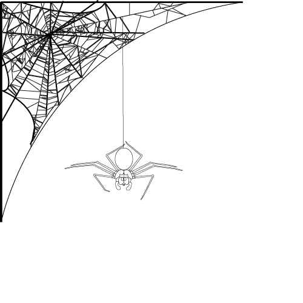
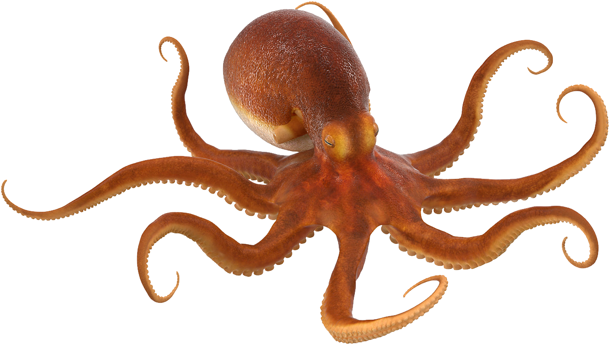
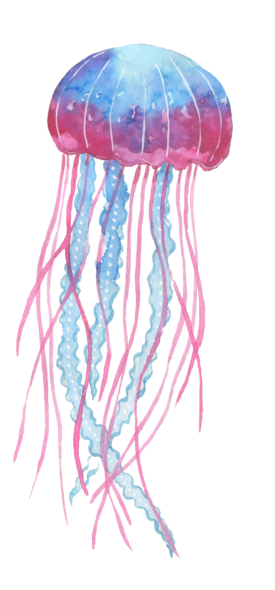

Los animales invertebrados son aquellos que no poseen una columna vertebral, ni un esqueleto interno.
Los animales invertebrados son aquellos que no poseen una columna vertebral, ni un esqueleto interno.
Este grupo esta clasificado por:
- Los insectos
- arácnidos
- moluscos
- crustáceos
- artrópodos
- cnidarios (medusas y corales)
- equinodermos
- anélidos (gusanos)
Los invertebrados representan aproximadamente el 97% de todas las especies animales, a pesar de su falta de columna vertebral, han desarrollado una gran variedad de estructuras y adaptaciones que les permiten sobrevivir en casi todos los hábitats del planeta.
Veamos el siguiente video para reforzar lo aprendido sobre los animales invertebrados:
Los insectos son el grupo más diverso de animales invertebrados y se caracterizan por tener un cuerpo dividido en tres partes: cabeza, tórax y abdomen. Tienen seis patas y, generalmente, dos pares de alas. Ejemplos:
Mariposa
Hormiga
Escarabajo
Los arácnidos, como las arañas y los escorpiones, tienen ocho patas y no tienen alas ni antenas. Ambos grupos juegan roles cruciales en los ecosistemas, desde polinizadores hasta depredadores.
Araña
Escorpión
Los moluscos son invertebrados que incluyen a:
Los Caracoles
Las almejas
Pulpo
Tienen cuerpos blandos, a menudo protegidos por una concha dura.
Los moluscos son conocidos por su capacidad de adaptarse a entornos terrestres y acuáticos.Los crustáceos, muestran una increíble diversidad en formas y tamaños y son esenciales en sus respectivos hábitats. ejemplo de esta especie tenemos:
Los Cangrejos
Las Langostas
tienen cuerpos segmentados y exoesqueletos duros, y son principalmente acuáticos..
Son un grupo diverso de animales invertebrados que se caracterizan por tener un exoesqueleto duro, apéndices articulados y un cuerpo segmentado. Incluyen a los insectos, arácnidos y crustáceos, entre otros. ejemplo de esta especies tenemos:
Ciempiés
alacrán
Los artrópodos se encuentran en casi todos los ecosistemas de la tierra y desempeñan roles importantes como polinizadores, depredadores y descomponedores.
Los cnidarios son un grupo de animales marinos que se caracterizan por tener cuerpos blandos y gelatinosos, a menudo con forma de saco o de pólipo. Poseen tentáculos que rodean su boca y que contienen células especializadas llamadas cnidocitos, que les permiten capturar presas y defenderse.
Los cnidarios son animales primitivos y se encuentran ampliamente distribuidos en los océanos de todo el mundo. Juegan un papel importante en los ecosistemas marinos y son conocidos por sus colores vibrantes y formas únicas.
En esta especie tenemos de ejemplo a:
Las Medusas
Corales
Anémonas de mar
Poseen espinas y tubos ambulacrales, que utilizan para moverse y capturar alimentos. Los equinodermos son exclusivamente acuáticos y se encuentran en los océanos de todo el mundo.
Desempeñan un papel importante en los ecosistemas marinos, tanto como depredadores como presas, y también ayudan en la regulación de las poblaciones de otros organismos.
en esta especie tenemos a:
Estrella de mar
Erizos de mar
Se caracterizan por tener cuerpos segmentados, lo que les da una apariencia similar a un gusano. Además, poseen un sistema digestivo completo y un sistema circulatorio cerrado.
Los anélidos pueden encontrarse en diversos ambientes, como el suelo, el agua dulce y el mar. Algunas especies son depredadoras, mientras que otras son filtradoras o se alimentan de materia orgánica en descomposición. Además, muchos anélidos tienen la capacidad de regenerar partes de su cuerpo si se dañan.
Lombriz de tierra
Sanguijuelas
Poliqueto